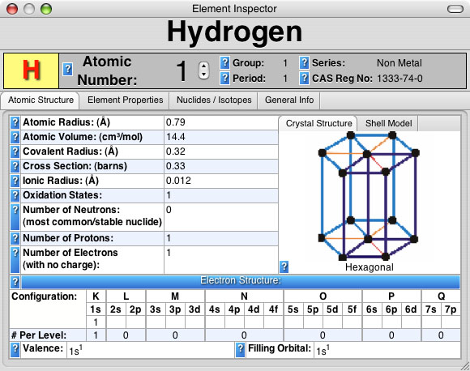
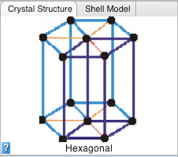
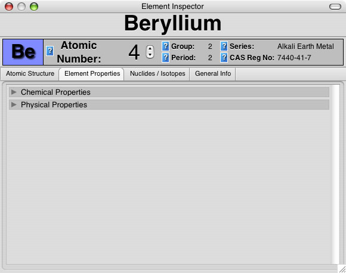
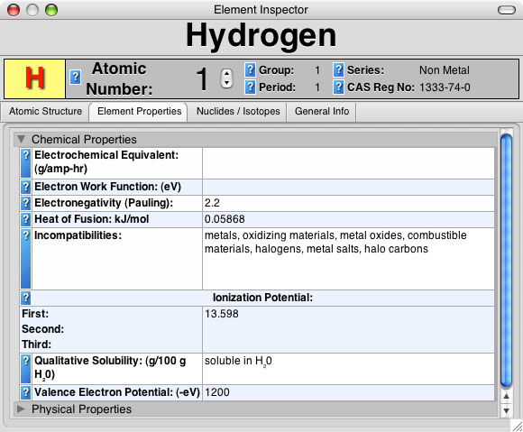
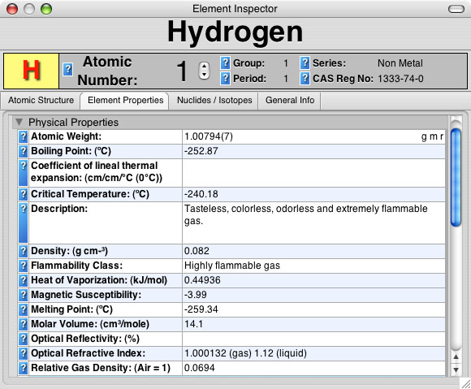
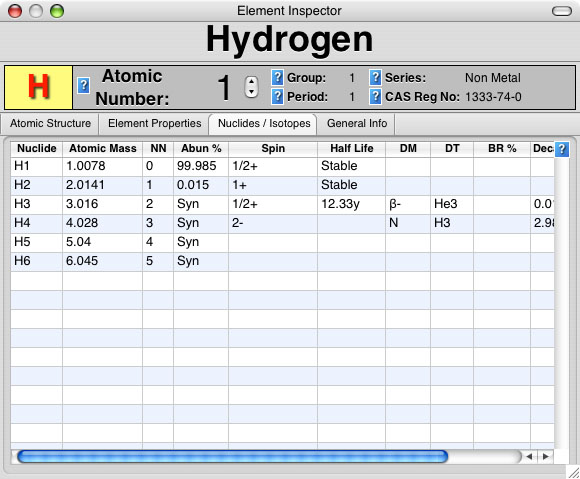
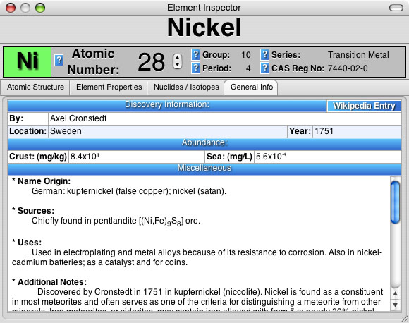
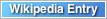
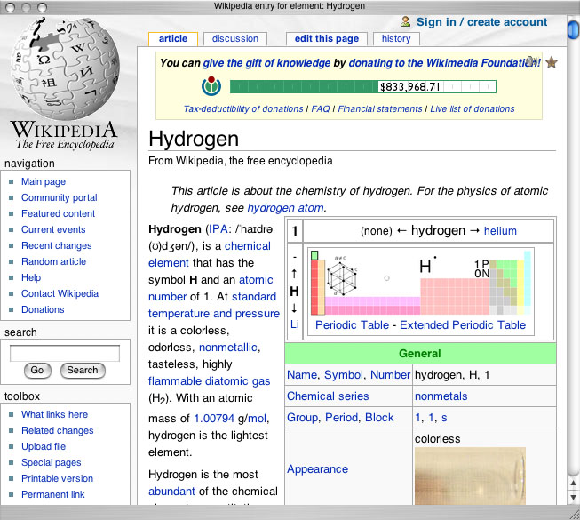

Atomic Structure
There are two image views showing element physical properties
-
Crystal Structure
 -
Shell Model

Element Properties
There are two views detailing element properties
-
Chemical Properties
 -
Physical Properties

Nuclides / Isotopes
General Info
By clicking the  button, an additional panel, shown below, will be displayed showing additional information about an element from wikipedia.org.
